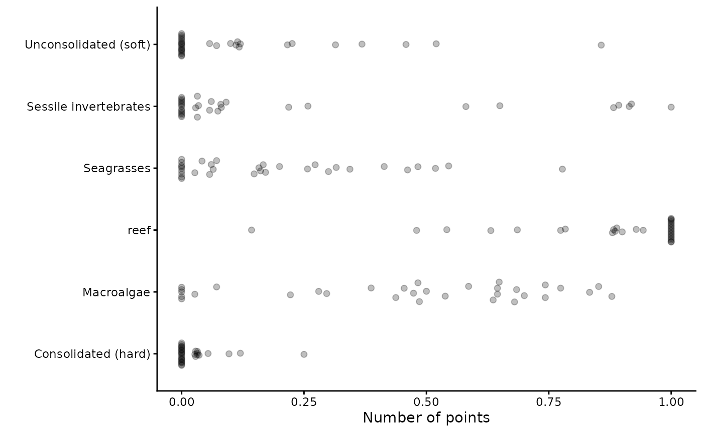
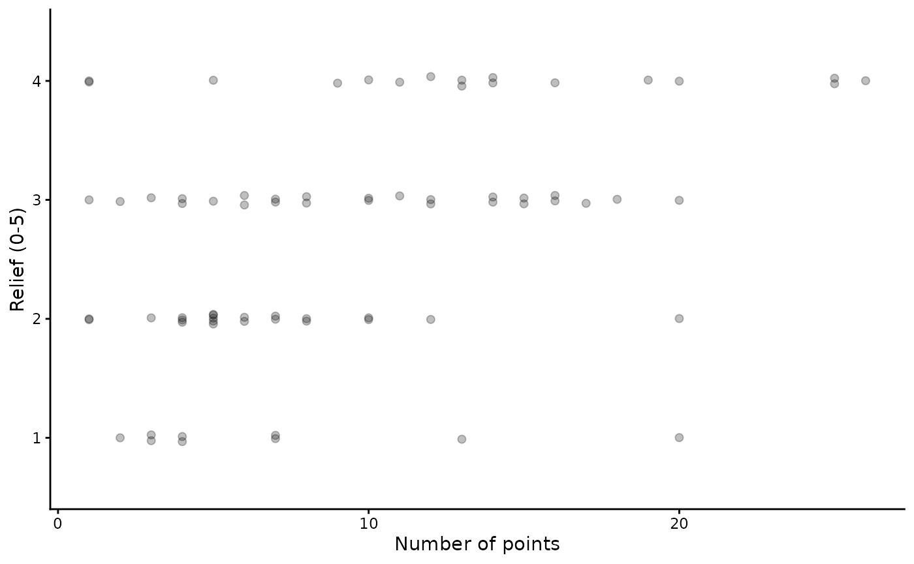

Format & visualise habitat data
Claude Spencer & Brooke Gibbons
2023-11-13
format-visualise-habitat.RmdThis script takes the checked habitat data from the previous workflow steps, visualises the data and exports it into a format suitable for modelling. The exploratory visualisation of the data allows for trends and patterns in the raw data to be investigated.
R set up
Load the necessary libraries.
library(CheckEM)
library(tidyverse)
library(ggbeeswarm)
library(RColorBrewer)
library(leaflet)
library(leaflet.minicharts)
library(here)Set the study name.
name <- "example-bruv-workflow"Read in the data
Load the metadata with bathymetry derivatives joined on.
metadata.bathy.derivatives <- readRDS(here::here(paste0("r-workflows/data/tidy/", name, "_metadata-bathymetry-derivatives.rds"))) %>%
dplyr::mutate(sample = as.character(sample)) %>%
glimpse()## Rows: 32
## Columns: 22
## $ campaignid <chr> "2023-03_SwC_stereo-BRUVs", "2023-03_SwC_s…
## $ sample <chr> "35", "5", "26", "23", "29", "4", "32", "3…
## $ date_time <chr> "14/03/2023 23:36", "14/03/2023 23:49", "1…
## $ location <chr> NA, NA, NA, NA, NA, NA, NA, NA, NA, NA, NA…
## $ site <chr> NA, NA, NA, NA, NA, NA, NA, NA, NA, NA, NA…
## $ depth <chr> "39.6", "42.7", "36", "41", "42.6", "45", …
## $ successful_count <chr> "Yes", "Yes", "Yes", "Yes", "Yes", "Yes", …
## $ successful_length <chr> "Yes", "Yes", "Yes", "Yes", "Yes", "Yes", …
## $ successful_habitat_forward <chr> "Yes", "Yes", "Yes", "Yes", "Yes", "Yes", …
## $ successful_habitat_backward <chr> "Yes", "Yes", "Yes", "Yes", "Yes", "Yes", …
## $ x <dbl> 114.9236, 114.9292, 114.9284, 114.9190, 11…
## $ y <dbl> -34.13155, -34.12953, -34.12729, -34.12832…
## $ longitude_dd <dbl> 114.9236, 114.9292, 114.9284, 114.9190, 11…
## $ latitude_dd <dbl> -34.13155, -34.12953, -34.12729, -34.12832…
## $ ID <dbl> 1, 2, 3, 4, 5, 6, 7, 8, 9, 10, 11, 12, 13,…
## $ mbdepth <dbl> -34.97151, -36.35807, -40.68553, -38.25594…
## $ slope <dbl> 0.146843375, 0.812689749, 0.694289634, 0.4…
## $ aspect <dbl> 209.89577, 62.41434, 40.87387, 294.10675, …
## $ TPI <dbl> 0.42153454, 2.39535522, -0.67607403, 0.476…
## $ TRI <dbl> 0.75557327, 3.29823494, 2.39221191, 1.8367…
## $ roughness <dbl> 2.21119308, 8.36493301, 8.36493301, 5.3012…
## $ detrended <dbl> -5.6631737, -7.0394716, -11.2637815, -8.69…Load the habitat data and format it into ‘broad’ classes for modelling. The classes included in the example are just a recommendation, however when deciding on your own habitat classes to model, we suggest using ecologically meaningful classes that will not be too rare to model.
habitat <- readRDS(here::here(paste0("r-workflows/data/staging/", name, "_habitat.rds"))) %>%
dplyr::mutate(habitat = case_when(level_2 %in% "Macroalgae" ~ level_2, level_2 %in% "Seagrasses" ~ level_2, level_2 %in% "Substrate" & level_3 %in% "Consolidated (hard)" ~ level_3, level_2 %in% "Substrate" & level_3 %in% "Unconsolidated (soft)" ~ level_3, level_2 %in% "Sponges" ~ "Sessile invertebrates", level_2 %in% "Sessile invertebrates" ~ level_2, level_2 %in% "Bryozoa" ~ "Sessile invertebrates", level_2 %in% "Cnidaria" ~ "Sessile invertebrates")) %>%
dplyr::select(campaignid, sample, habitat, number) %>%
group_by(campaignid, sample, habitat) %>%
dplyr::tally(number, name = "number") %>% dplyr::mutate(total_points_annotated = sum(number)) %>%
ungroup() %>%
pivot_wider(names_from = "habitat", values_from = "number", values_fill = 0) %>%
dplyr::mutate(reef = Macroalgae + Seagrasses + `Sessile invertebrates` + `Consolidated (hard)`) %>%
pivot_longer(cols = c("Macroalgae", "Seagrasses", "Sessile invertebrates", "Consolidated (hard)", "Unconsolidated (soft)", "reef"), names_to = "habitat", values_to = "number") %>%
glimpse()## Rows: 198
## Columns: 5
## $ campaignid <chr> "2023-03_SwC_stereo-BRUVs", "2023-03_SwC_stereo…
## $ sample <chr> "10", "10", "10", "10", "10", "10", "12", "12",…
## $ total_points_annotated <dbl> 97, 97, 97, 97, 97, 97, 71, 71, 71, 71, 71, 71,…
## $ habitat <chr> "Macroalgae", "Seagrasses", "Sessile invertebra…
## $ number <dbl> 8, 84, 2, 0, 3, 94, 57, 12, 2, 0, 0, 71, 50, 12…Load the relief data and summarise this into mean and standard deviation relief.
tidy.relief <- readRDS(here::here(paste0("r-workflows/data/staging/", name, "_relief.rds"))) %>%
uncount(number) %>%
group_by(campaignid, sample) %>%
dplyr::summarise(mean.relief = mean(as.numeric(level_5)), sd.relief = sd(as.numeric(level_5), na.rm = T)) %>%
ungroup() %>%
glimpse()## `summarise()` has grouped output by 'campaignid'. You can override using the
## `.groups` argument.## Rows: 32
## Columns: 4
## $ campaignid <chr> "2023-03_SwC_stereo-BRUVs", "2023-03_SwC_stereo-BRUVs", "2…
## $ sample <chr> "10", "12", "14", "15", "16", "17", "19", "2", "21", "22",…
## $ mean.relief <dbl> 3.217391, 2.809524, 2.440000, 2.518519, 4.000000, 3.333333…
## $ sd.relief <dbl> 0.7952428, 0.4023739, 0.7118052, 0.8024180, 0.0000000, 0.9…Format the habitat and relief data for plotting and modelling
Join the habitat data with relief, metadata and bathymetry derivatives.
tidy.habitat <- metadata.bathy.derivatives %>%
left_join(habitat) %>%
left_join(tidy.relief) %>%
dplyr::mutate(longitude_dd = as.numeric(longitude_dd),
latitude_dd = as.numeric(latitude_dd)) %>%
clean_names() %>%
glimpse()## Joining with `by = join_by(campaignid, sample)`
## Joining with `by = join_by(campaignid, sample)`## Rows: 192
## Columns: 27
## $ campaignid <chr> "2023-03_SwC_stereo-BRUVs", "2023-03_SwC_s…
## $ sample <chr> "35", "35", "35", "35", "35", "35", "5", "…
## $ date_time <chr> "14/03/2023 23:36", "14/03/2023 23:36", "1…
## $ location <chr> NA, NA, NA, NA, NA, NA, NA, NA, NA, NA, NA…
## $ site <chr> NA, NA, NA, NA, NA, NA, NA, NA, NA, NA, NA…
## $ depth <chr> "39.6", "39.6", "39.6", "39.6", "39.6", "3…
## $ successful_count <chr> "Yes", "Yes", "Yes", "Yes", "Yes", "Yes", …
## $ successful_length <chr> "Yes", "Yes", "Yes", "Yes", "Yes", "Yes", …
## $ successful_habitat_forward <chr> "Yes", "Yes", "Yes", "Yes", "Yes", "Yes", …
## $ successful_habitat_backward <chr> "Yes", "Yes", "Yes", "Yes", "Yes", "Yes", …
## $ x <dbl> 114.9236, 114.9236, 114.9236, 114.9236, 11…
## $ y <dbl> -34.13155, -34.13155, -34.13155, -34.13155…
## $ longitude_dd <dbl> 114.9236, 114.9236, 114.9236, 114.9236, 11…
## $ latitude_dd <dbl> -34.13155, -34.13155, -34.13155, -34.13155…
## $ id <dbl> 1, 1, 1, 1, 1, 1, 2, 2, 2, 2, 2, 2, 3, 3, …
## $ mbdepth <dbl> -34.97151, -34.97151, -34.97151, -34.97151…
## $ slope <dbl> 0.1468434, 0.1468434, 0.1468434, 0.1468434…
## $ aspect <dbl> 209.89577, 209.89577, 209.89577, 209.89577…
## $ tpi <dbl> 0.4215345, 0.4215345, 0.4215345, 0.4215345…
## $ tri <dbl> 0.7555733, 0.7555733, 0.7555733, 0.7555733…
## $ roughness <dbl> 2.211193, 2.211193, 2.211193, 2.211193, 2.…
## $ detrended <dbl> -5.663174, -5.663174, -5.663174, -5.663174…
## $ total_points_annotated <dbl> 114, 114, 114, 114, 114, 114, 146, 146, 14…
## $ habitat <chr> "Macroalgae", "Seagrasses", "Sessile inver…
## $ number <dbl> 96, 6, 3, 1, 8, 106, 110, 36, 0, 0, 0, 146…
## $ mean_relief <dbl> 3.034483, 3.034483, 3.034483, 3.034483, 3.…
## $ sd_relief <dbl> 1.1174831, 1.1174831, 1.1174831, 1.1174831…Format the relief into a format suitable for exploratory plotting.
plot.relief <- readRDS(here::here(paste0("r-workflows/data/staging/", name, "_relief.rds"))) %>%
group_by(campaignid, sample, level_5) %>%
dplyr::summarise(number = sum(number)) %>%
ungroup() %>%
dplyr::mutate(class.relief = as.factor(level_5)) %>%
glimpse()## `summarise()` has grouped output by 'campaignid', 'sample'. You can override
## using the `.groups` argument.## Rows: 73
## Columns: 5
## $ campaignid <chr> "2023-03_SwC_stereo-BRUVs", "2023-03_SwC_stereo-BRUVs", "…
## $ sample <chr> "10", "10", "10", "12", "12", "14", "14", "14", "15", "15…
## $ level_5 <chr> "2", "3", "4", "2", "3", "1", "2", "3", "1", "2", "3", "4…
## $ number <dbl> 5, 8, 10, 4, 17, 3, 8, 14, 4, 6, 16, 1, 20, 6, 2, 13, 10,…
## $ class.relief <fct> 2, 3, 4, 2, 3, 1, 2, 3, 1, 2, 3, 4, 4, 2, 3, 4, 2, 3, 3, …Visualise the habitat and relief data
Plot the occurence data per habitat class. Each data point represents a unique sample.
ggplot() +
geom_quasirandom(data = tidy.habitat, aes(x = total_points_annotated, y = habitat), groupOnX = F, method = "quasirandom", alpha = 0.25, size = 1.8, width = 0.2) +
labs(x = "Number of points", y = "") +
theme_classic()## Orientation inferred to be along y-axis; override with
## `position_quasirandom(orientation = 'x')` Plot the occurence data for each level of relief.
ggplot() +
geom_quasirandom(data = plot.relief, aes(x = number, y = class.relief), groupOnX = F, method = "quasirandom", alpha = 0.25, size = 1.8, width = 0.05) +
labs(x = "Number of points", y = "Relief (0-5)") +
theme_classic()## Orientation inferred to be along y-axis; override with
## `position_quasirandom(orientation = 'x')` Create a colour palette for plotting.
cols <- colorRampPalette(brewer.pal(12, "Paired"))(length(unique(tidy.habitat$habitat))) Format the habitat into wide format suitable for plotting.
plot.habitat <- tidy.habitat %>%
pivot_wider(names_from = "habitat", values_from = "number", names_prefix = "broad.") %>%
glimpse()## Rows: 32
## Columns: 31
## $ campaignid <chr> "2023-03_SwC_stereo-BRUVs", "2023-03_SwC…
## $ sample <chr> "35", "5", "26", "23", "29", "4", "32", …
## $ date_time <chr> "14/03/2023 23:36", "14/03/2023 23:49", …
## $ location <chr> NA, NA, NA, NA, NA, NA, NA, NA, NA, NA, …
## $ site <chr> NA, NA, NA, NA, NA, NA, NA, NA, NA, NA, …
## $ depth <chr> "39.6", "42.7", "36", "41", "42.6", "45"…
## $ successful_count <chr> "Yes", "Yes", "Yes", "Yes", "Yes", "Yes"…
## $ successful_length <chr> "Yes", "Yes", "Yes", "Yes", "Yes", "Yes"…
## $ successful_habitat_forward <chr> "Yes", "Yes", "Yes", "Yes", "Yes", "Yes"…
## $ successful_habitat_backward <chr> "Yes", "Yes", "Yes", "Yes", "Yes", "Yes"…
## $ x <dbl> 114.9236, 114.9292, 114.9284, 114.9190, …
## $ y <dbl> -34.13155, -34.12953, -34.12729, -34.128…
## $ longitude_dd <dbl> 114.9236, 114.9292, 114.9284, 114.9190, …
## $ latitude_dd <dbl> -34.13155, -34.12953, -34.12729, -34.128…
## $ id <dbl> 1, 2, 3, 4, 5, 6, 7, 8, 9, 10, 11, 12, 1…
## $ mbdepth <dbl> -34.97151, -36.35807, -40.68553, -38.255…
## $ slope <dbl> 0.146843375, 0.812689749, 0.694289634, 0…
## $ aspect <dbl> 209.89577, 62.41434, 40.87387, 294.10675…
## $ tpi <dbl> 0.42153454, 2.39535522, -0.67607403, 0.4…
## $ tri <dbl> 0.75557327, 3.29823494, 2.39221191, 1.83…
## $ roughness <dbl> 2.21119308, 8.36493301, 8.36493301, 5.30…
## $ detrended <dbl> -5.6631737, -7.0394716, -11.2637815, -8.…
## $ total_points_annotated <dbl> 114, 146, 213, 123, 196, 88, 25, 19, 33,…
## $ mean_relief <dbl> 3.034483, 3.900000, 4.000000, 3.555556, …
## $ sd_relief <dbl> 1.1174831, 0.4472136, 0.0000000, 0.85558…
## $ broad.Macroalgae <dbl> 96, 110, 105, 50, 28, 50, 7, 1, 16, 30, …
## $ broad.Seagrasses <dbl> 6, 36, 108, 66, 168, 36, 0, 6, 6, 54, 12…
## $ `broad.Sessile invertebrates` <dbl> 3, 0, 0, 7, 0, 2, 2, 0, 0, 0, 2, 0, 1, 0…
## $ `broad.Consolidated (hard)` <dbl> 1, 0, 0, 0, 0, 0, 3, 0, 0, 0, 0, 0, 0, 0…
## $ `broad.Unconsolidated (soft)` <dbl> 8, 0, 0, 0, 0, 0, 13, 12, 11, 0, 0, 0, 0…
## $ broad.reef <dbl> 106, 146, 213, 123, 196, 88, 12, 7, 22, …Visualise the habitat classes as spatial pie charts.
leaflet() %>%
addTiles(group = "Open Street Map") %>%
addProviderTiles('Esri.WorldImagery', group = "World Imagery") %>%
addLayersControl(baseGroups = c("World Imagery", "Open Street Map"), options = layersControlOptions(collapsed = FALSE)) %>%
addMinicharts(plot.habitat$longitude_dd, plot.habitat$latitude_dd, type = "pie", colorPalette = cols, chartdata = plot.habitat[grep("broad", names(plot.habitat))], width = 20, transitionTime = 0) %>%
setView(mean(as.numeric(plot.habitat$longitude_dd)),
mean(as.numeric(plot.habitat$latitude_dd)), zoom = 12)Choose an individual habitat class to visualise as spatial bubble plots.
hab.name <- 'Sessile invertebrates'
overzero <- tidy.habitat %>%
filter(habitat %in% hab.name & number > 0)
equalzero <- tidy.habitat %>%
filter(habitat %in% hab.name & number == 0)Visualise the individual habitat classes.
bubble.plot <- leaflet(data = tidy.habitat) %>%
addTiles() %>%
addProviderTiles('Esri.WorldImagery', group = "World Imagery") %>%
addLayersControl(baseGroups = c("Open Street Map", "World Imagery"), options = layersControlOptions(collapsed = FALSE))
if (nrow(overzero)) {
bubble.plot <- bubble.plot %>%
addCircleMarkers(data = overzero, lat = ~ latitude_dd, lng = ~ longitude_dd, radius = ~ number + 3, fillOpacity = 0.5, stroke = FALSE, label = ~ as.character(sample))}
if (nrow(equalzero)) {
bubble.plot <- bubble.plot %>%
addCircleMarkers(data = equalzero, lat = ~ latitude_dd, lng = ~ longitude_dd, radius = 2, fillOpacity = 0.5, color = "white", stroke = FALSE, label = ~ as.character(sample))}
bubble.plot